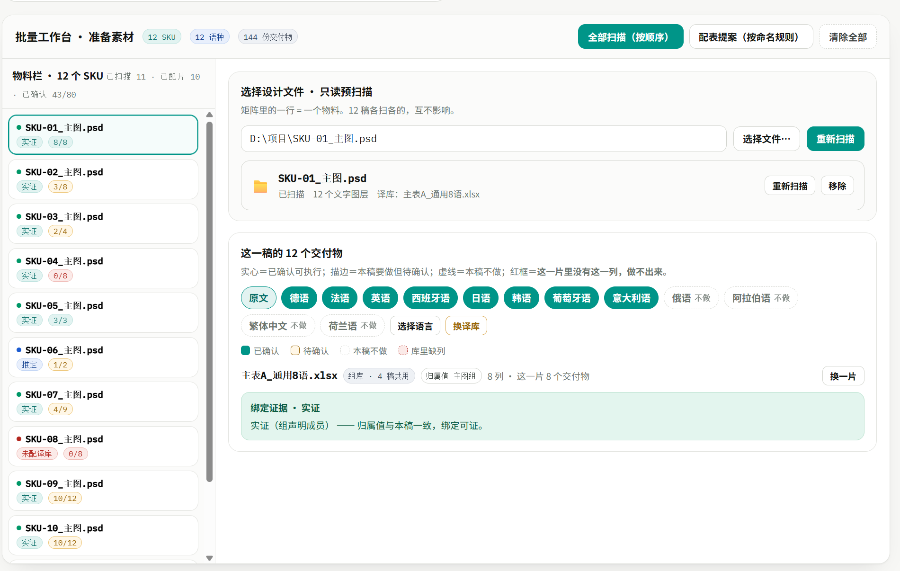
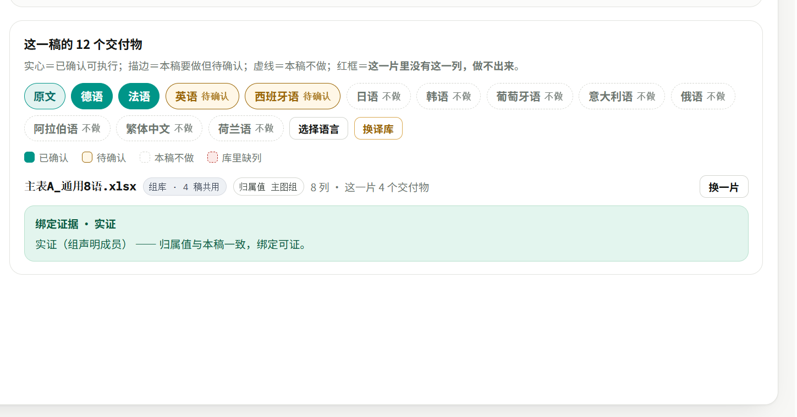
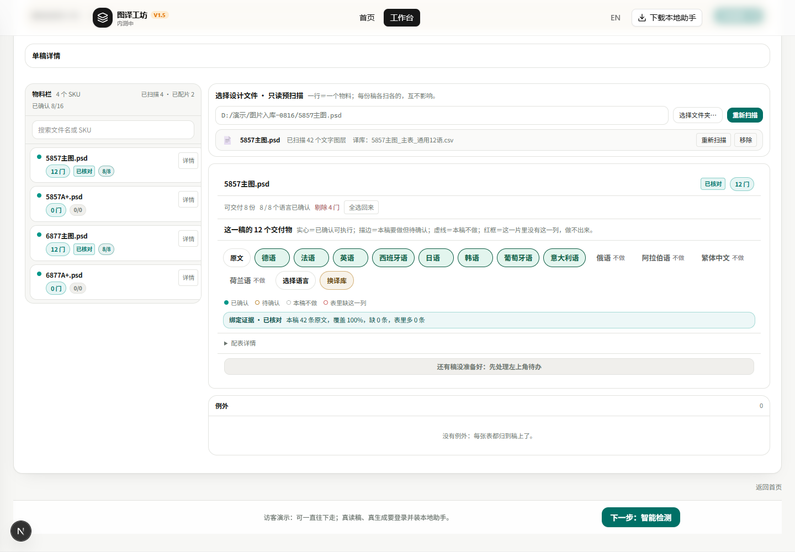
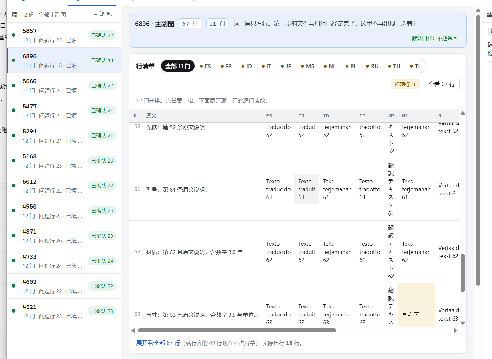
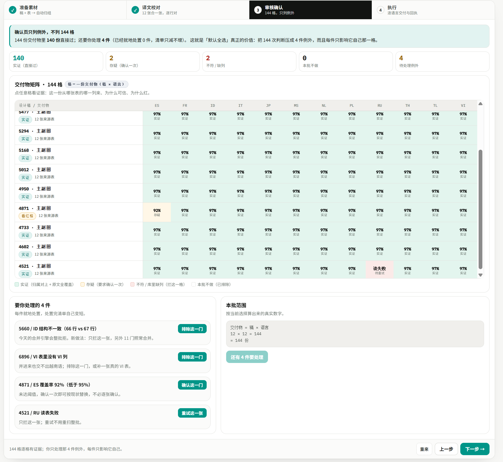
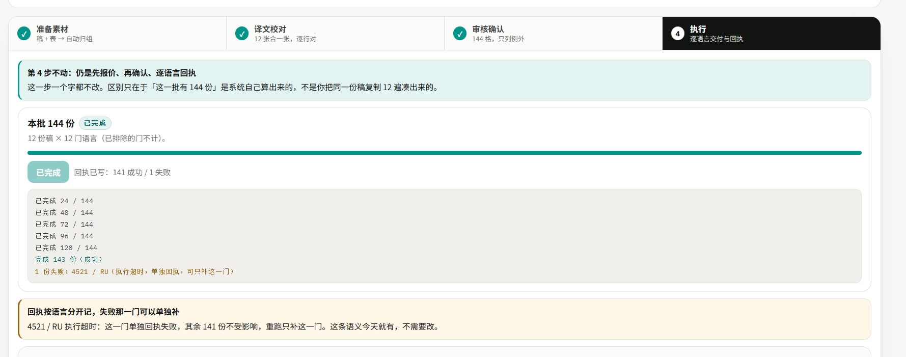
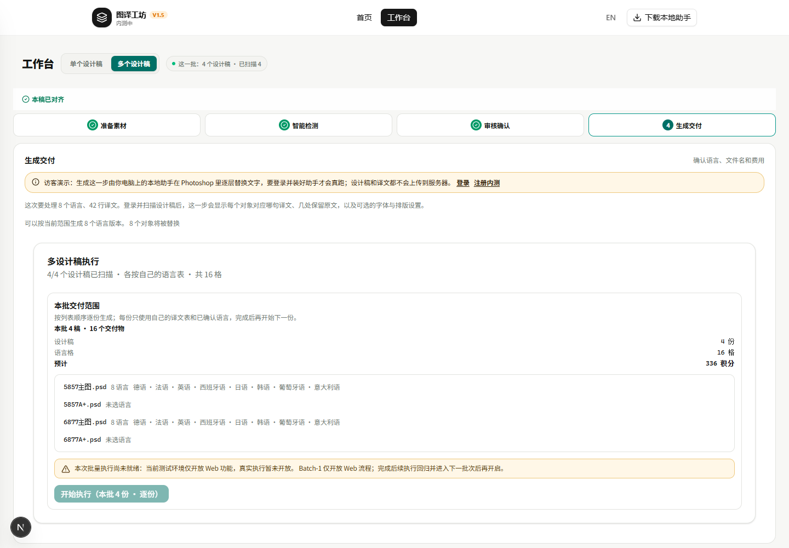

改了什么 · 效果图对照
左边是你发的图，右边是现在产品上真实跑出来的画面（2026-10-30 下午，本机 127.0.0.1:3000）。数据是演示样本，不是真客户稿。
1. 准备素材：改成左右两栏了
左边一列是 PSD（一份稿一行），点哪一行，右边就变成那一稿的东西——选文件、看扫到多少文字层、看这一稿要出几份。


2. 一张表就能管多门语言（这次最大的一处）
以前一张表只认第一列语言，12 门就得准备 12 张表。现在一张带 12 列的表下去，12 个交付物一次全亮；不做的语言点一下就变虚线，别的语言不受影响。


还差两点，说实话：① 绿色实心是"这门已确认可执行"，演示环境没真扫描所以是描边；② 你图里那行"主表A_通用8语 · 组库 · 归属值"要真表绑定确认后才出现。
3. 智能检测：一行一行摊开，语言可以单看
原来是一堆卡片，现在改成行清单：一行一句原文，横着排各语言译文，上面一排语言可以单点一门看，默认只列有问题的行。


4. 审核确认：整批每一格挪到这一步了
第 1 步不再摆整批大矩阵，矩阵搬到"审核确认"这里一次看全（稿 × 语言），点一格看这一份凭什么能交。

这张没拍到
代码里这一步已经是矩阵＋例外清单的形状，但演示数据走到这里时页面跳到了第 4 步（自动化点错按钮）。我不想拿错屏冒充，等你选"真扫描"那条路，我用真稿截给你。
代码里这一步已经是矩阵＋例外清单的形状，但演示数据走到这里时页面跳到了第 4 步（自动化点错按钮）。我不想拿错屏冒充，等你选"真扫描"那条路，我用真稿截给你。
5. 生成交付：份数按语言算，不再按表算
这一屏告诉你"这批要出多少份、大概花多少积分"。现在这个数是按"稿 × 语言"算的：2 份稿各做 8 门 = 16 个交付物。


另外顺手改的（都在界面上能看见）
- 主色统一成青绿（teal），四个步骤条、按钮、语言胶囊一套色，不再一半黑一半绿。
- 顶部标题带三个数：几份稿、几门语言、几份交付物，一眼看规模。
- "全部扫描"变成主按钮；每稿还能单独"换译库""选择语言"，不影响别的稿。
- 语言胶囊四种样子分得清了：实心＝已确认能做，描边＝要做但没确认，虚线＝这一稿不做，红框＝表里缺这一列做不出来。
- 每份稿下面有一行"绑定证据"，说清这一稿跟哪张表对上了、覆盖多少、缺几条。
你要拍的：跑哪种
- A. 只看真扫描（不花钱、不改你的 PSD 内容）：你在这个页面用自己账号登录一次，指一个真稿文件夹，我把上面"没拍到"的那张和实心绿、主表那行截成真实数据给你。
- B. 真跑一批（花钱、会生成 PSD 副本）：现在第 4 步写着"真实执行暂未开放"，按钮是灰的。要走这条得先让我把这版推上测试站并打开执行开关——这属于发布动作，我不会自己按。
代码目前没提交、没上线，都在本地等你看。